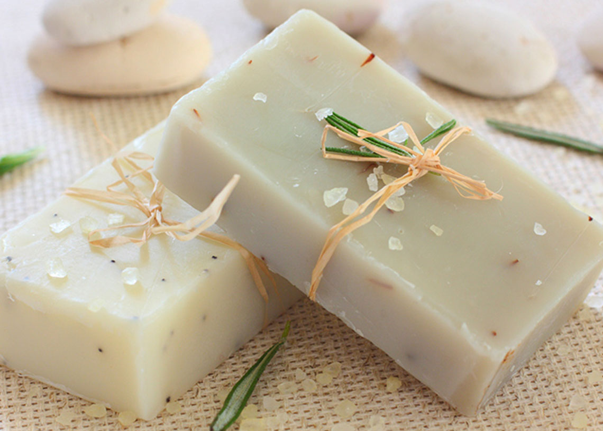
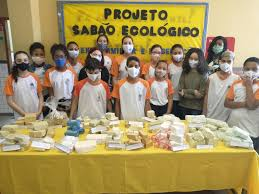
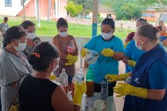
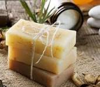

Galeria
Confira imagens e vídeos do processo de fabricação do sabão ecológico e nossas produções com os alunos:

Óleo de cozinha usado para fazer sabão

Oficina ecológica com as crianças
Processo de mistura

Nosso sabão

Nossa oficina de produção

Sabão ecológico pronto